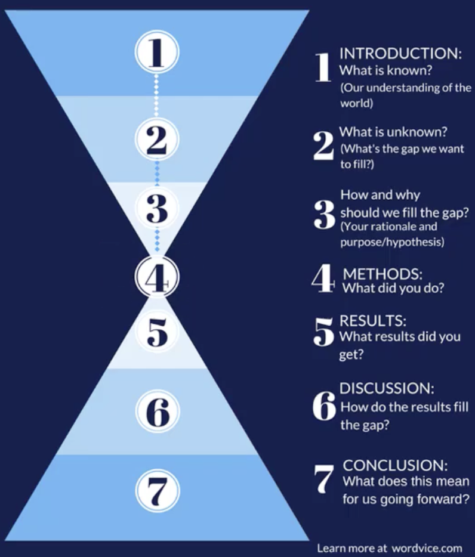
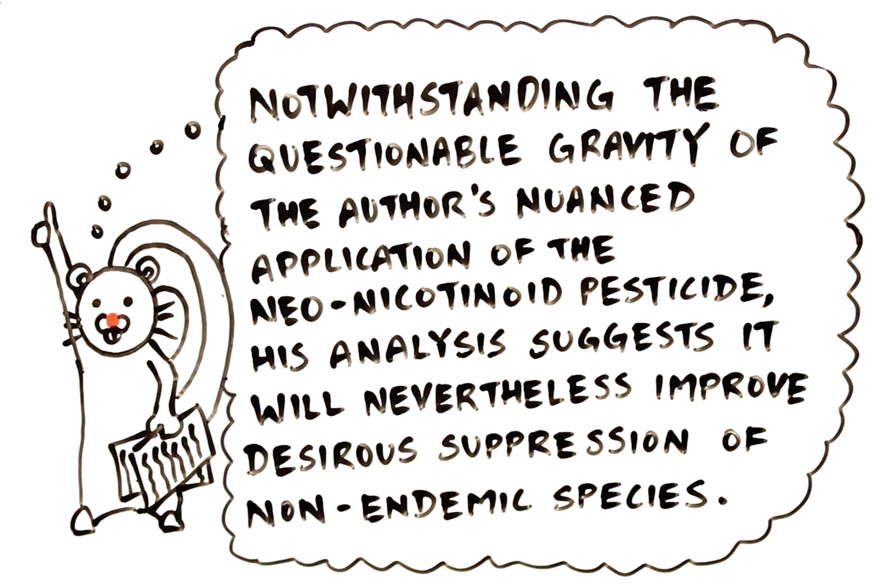

Quantitative Reasoning
1015SCG
Lecture 9

Writing scientific thinking
Narrative/Structure
Structure of academic writing
|
Our aim is to tell a (scientific) story.
Academic scientific writing uses structures to develop this narrative
|
 |
Structure of academic writing
👉 Our aim is to tell a (scientific) story.
|
Academic scientific writing uses structures to develop this narrative
There can be variations on this theme
|
How to write an Introduction?
The introduction should create a context for the work.
-
Establish a context:
- Show relevance, importance, significance
- Define concepts
- Establish research territory
-
Establish gap:
- Indicate a gap in previous research
- Relate it as an extension to existing research
-
Occupy a gap:
- Outlines aims of present research
- List research questions/hypothesize
- State value of research
- Indicate structure of paper, announce principal findings
What do I pu in my Method section?
Discuss your methodology and your method
-
Methodology:
- Rationale, reasons for the processes you followed
- This could rely on some underpinning theory (you might require a theory section beforehand)
-
Methods:
- How you did your works: the processes themselves
- Should read like a recipe someone else could follow
- Commonly in passive voice: The possums were counted rather than we counted the possums.
How do I present my Results?
Result can be structured in the following way.
-
Approach the knowledge gap:
- Short reminder of the purpose of the study, restating and justifying study specifics
-
Occupy the knowledge gap:
- Report specific result
- Use varying forms (tables, figures) of presentation to show results most clearly
-
Interpret against the knowledge gap (discussion):
- Compare results (with experiments, others' results)
- Explain/account for results
- Acknowledge limitations
-
Expand into the knowledge gap (discussion):
- Generalise result (where possible)
- Claim value
- Note implications
- Proposing future directions
How do I Discuss and Conclude?
Discussions can be:
- Combined with results; or
- separate from results; or
- combined with conclusion
Both your Discussion and Conclusion should lead the specific to the general:
- Discussion should interpret against and expand into the knowledge gap (it should contextualise results).
- Conclusions should summarise the key points you have raised.
Avoid common weaknesses by:
- making your work front and centre (discuss other work in context of yours)
- making explicit links with others' work
- (actually) drawing a conclusion
- balancing of the strength of your claim with choice of language
Structure outline
How would we structure a paper describing the impact of attending tutorials on overall marks?
What would we put in the
- Introduction?
- Method?
- Results?
- Discussion / Conclusion?
Features of Scientific writing
Self-mention (and self-citation):
- As was demonstrated previously
Directive: infinitives or orders
- For theory/mathematical/deductive development
Boosters: emphatic, increases force of statements
- clearly, obviously
Hedging: avoiding 100% claims, often using modal verbs
- may, might, could, is likely, will probably
Signpost: directing readers' attention
- In addition, however, in chapter 4 we will
Impersonal: passive
- The samples were heated to $100^{\circ}$C
Style of academic writing
Balance formal academic writing with writing clearly
- Avoid contractions (does not rather than doesn't)
- Avoid "etc." (provide the missing information)
- Avoid high noun-to-verb ratio
- Avoid phrasal verbs (investigated rather than look at)
-
Avoid dummy subjects (it's; there's)
- Be specific
- Dummy subjects make sentences harder to read because readers cannot anticipate what is coming next.
-
Use dynamic language
- Avoid passive verbs such as exist, occur, happen
- Prefer X is defined as to The definition of X is
Flow across long documents
Use signposting to let the reader know what's coming.
Do not be scare of repeated signposts
- In chapter 4, we will review the literature on treatments for skin cancer
- In this section, we will review the literature on treatments for skin cancer
- Having just reviewed the literature on treatments for skin cancer, we now consider...
- From our review of the literature on treatments for skin cancer, we saw that...
Signposts between sections as well as within sections
- How does it work without my headings?
- How does it work with only my headings?
Paragraph flow
Use topic sentences
- The first sentence should be the key idea in your paragraph
- The rest of the paragraph should support this key idea
Don't hide your result in the middle of paragraph
- Key findings should stand out
Scientific writing is not about long sentences or big words
- Shorter sentences are easier to understand.
- Split long sentences into shorter ones where possible.
-
Use verbs over nouns:
Solvent evaporation occurred through heating the samples
The samples were heated until the solvent had evaporated
Sentence flow: connecting ideas
English is a writer-responsible language: Put the subject/key information at the beginning (of sentences and paragraphs).
- Short sentences are easier to understand
- Vary sentence length
- Paragraphs should move from old information to new
- Avoid ambiguous references such as “this” or “that”
PEEL (Point, Evidence, Explanation, Link) structure:
- Make your point
- Back it up with evidence
- Explain how the evidence supports your point
- Link this point to the next point (in the following paragraph)
Where's the key finding?
This paragraph attempts to incorporate background context, justification of the study, methodological detail, interpretation of results, and broader implications into a single continuous block of text. In doing so, it accumulates information in a way that lacks clear structure or emphasis, forcing the reader to process multiple ideas simultaneously. References to data collection procedures, assumptions underlying the analysis, and limitations of the sample are introduced alongside interpretive statements, with little indication of which points are most important. Sentences become progressively longer as additional clauses are appended, and the paragraph grows in density as more information is layered onto earlier claims without pause or signposting. Embedded within this dense narrative is the central result: students who attended tutorials achieved higher overall marks than those who did not. Unfortunately, this key finding is surrounded by extensive explanatory material, qualifications, and tangential observations that dilute its impact and make it difficult to locate, particularly for readers who are skimming the text in search of results. The absence of a clear topic sentence and the failure to foreground the main outcome mean that the reader must work hard to extract the message, increasing cognitive load and reducing comprehension. As a result, the paragraph illustrates how excessive length, compounded by weak sentence control and poor prioritisation of information, can obscure rather than communicate scientific meaning.
Example 1: Does this paragraph flow?
In order to understand the onset of uveitis, scientists induce EAU in mouse and rat model by injecting the animal with a small inoculation dose. Experimental Autoimmune Uveitis (EAU) is an autoimmune form of uveitis that is induced experimentally. Uveitis, the inflammation of the uvea (anterior part of the eye, including the retina), is a significant cause of blindness in the Western world, but the onset of autoimmune uveitis is not well understood. By knowing when the experiment was started, scientists can work out the time course of the disease, which is useful on the clinical setting.
Example 1: How about this?
Uveitis, the inflammation of the uvea (anterior part of the eye, including the retina), is a significant cause of blindness in the Western world, but the onset of autoimmune uveitis is not well understood. Experimental Autoimmune Uveitis (EAU) is an autoimmune form of uveitis that is induced experimentally. In order to understand the onset of uveitis, scientists induce EAU in mouse and rat model by injecting the animal with a small inoculation dose. By knowing when the experiment was started, scientists can work out the time course of the disease, which is useful on the clinical setting.
Where's the key finding?
The data for this study were collected over several weeks during the teaching period and were analysed using standard statistical methods. Preliminary inspection of the dataset suggested some variation between groups, although the overall distribution of marks appeared broadly consistent across the cohort.
Before drawing conclusions, several contextual factors were taken into account. These included the relatively small sample size, the presence of missing data, measurement uncertainty, and the possibility of self-selection bias among students who chose to attend tutorials.
Additional considerations related to the design of the assessment tasks and the timing of tutorial sessions were also examined. These factors informed the choice of analytical approach and shaped the interpretation of the results presented in the following sections.
Despite these limitations and sources of uncertainty, the analysis did reveal a clear outcome. Attendance at tutorials was associated with a statistically significant increase in overall marks.
To explore the robustness of this result, further comparisons were made across different cohorts and teaching periods. Similar patterns were observed in most cases, although the magnitude of the effect varied slightly between groups.
These findings are discussed in relation to previous studies on student engagement and learning support. The broader implications for teaching practice and curriculum design are considered in the discussion section.
Where's the key finding?
All sorts of information about everything you could possibly conceive or imagine occurs in this ridiculously long paragraph. This is one ridiculously long paragraph containing all sorts of information about everything you could possibly conceive or imagine. Ridiculously long paragraph containing all sorts of information about everything you could possibly conceive or imagine. All sorts of information about everything you could possibly conceive or imagine occurs in this ridiculously long paragraph. This is one ridiculously long paragraph containing all sorts of information about everything you could possibly conceive or imagine. Ridiculously long paragraph containing all sorts of information about everything you could possibly conceive or imagine. Here are my major findings, but you would be lucky to find them hidden in this sea of text. Note how long paragraphs and sentences make it difficult for the reader to find what they are interested in. All sorts of information about everything you could possibly conceive or imagine occurs in this ridiculously long paragraph. This is one ridiculously long paragraph containing all sorts of information about everything you could possibly conceive or imagine. Ridiculously long paragraph containing all sorts of information about everything you could possibly conceive or imagine.
Where's the key finding?
This is a shorter paragraph. This is a simple sentence. A compound sentence is also short an d it is also easy to read. This is a shorter paragraph. This is a simple sentence. A compound sentence is also short an d it is also easy to read.
This is a shorter paragraph. This is a simple sentence. A compound sentence is also short an d it is also easy to read. This is a shorter paragraph. This is a simple sentence. A compound sentence is also short an d it is also easy to read.
Note this paragraph is also quite short. Is is shorter than others. Here are my major findings, which you can see quite clearly.
This is a shorter paragraph. This is a simple sentence. A compound sentence is also short an d it is also easy to read. This is a shorter paragraph. This is a simple sentence. A compound sentence is also short an d it is also easy to read.
This is a shorter paragraph. This is a simple sentence. A compound sentence is also short an d it is also easy to read. This is a shorter paragraph. This is a simple sentence. A compound sentence is also short an d it is also easy to read.
Example 2: Does this paragraph flow?
An outbreak of APP can present as a dramatic clinical disease or as a chronic, production limiting disease in pig herds. A sudden increase in the number of sick and coughing pigs an a sharp rise in moralities may indicate an outbreak of APP in a herd. On the other hand, indications may be limited to a drop in growth rate and an increase in grade-2 pleurisy lesions in in slaughter pigs. Pleuropneumonia (APP) is regarded as one of the most costly and devastating diseases affecting the Australian pig industry; yet it may not be easily diagnosed.
Example 2: How about this?
Pleuropneumonia (APP) is regarded as one of the most costly and devastating diseases affecting the Australian pig industry; yet it may not be easily diagnosed. An outbreak of APP can present as a dramatic clinical disease or as a chronic, production limiting disease in pig herds. A sudden increase in the number of sick and coughing pigs an a sharp rise in moralities may indicate an outbreak of APP in a herd. On the other hand, indications may be limited to a drop in growth rate and an increase in grade-2 pleurisy lesions in in slaughter pigs.
Compare these method descriptions
| The method developed in this work relies on a sample pre-treatment that allows a low final dilution, allowing on the other hand, a negligible shift of pH with regard to different specimens to be tested (±0.15 units from 23 samples tested); however, the slight shifts of pH do not alter the response of the test as shown by the overlapping of standard curves obtained by spiking buffers at different pH with IGF-1. | Our method relies on a sample pretreatment that allows a low final dilution. It guarantees a negligible shift of pH with regard to different specimens to be tested (±0.15 units from 23 samples tested). Importantly, the slight shifts of pH do not alter the response of the test. This is revealed by the overlapping of standard curves obtained by spiking buffers at different pH with IGF-1. |
Accuracy
- Define concepts precisely
- Avoid words you do not fully understand
- Avoid common confusions (principle/principal)
- Do not rely solely on spell-checkers
- Check grammar carefully
Brevity
- Write succinctly
- Use simple, correct language
- Remove unnecessary jargon
- Avoid redundant words
- Repetition should be intentional
Clarity
Avoiding ambiguity
- We decided to cancel the lecture at 10am
- Let's eat grandma
- Aligning scaffolding of in-class activities with learning outcomes enhances student value-add.
Grammar squirrel
Grammar Squirrel is finishing off a piece of science writing in which she is reviewing a complex journal article as part of an assignment.
Source: Grammar Squirrel by University of British Columbia
Grammar squirrel

Source: Grammar Squirrel by University of British Columbia
Grammar squirrel
The difference in the way the author applied the pesticide was only small, but it should help stop non-native species spreading
Source: Grammar Squirrel by University of British Columbia
Editing vs proof-reading
Editing considers the global picture
- organisation, style, readability
Proof-reading address the mechanical level
- spelling, grammar, and punctuation
Proof-reading tips:
- Take a break between writing and proof reading (48 hrs)
- Leave yourself the time
- Edit first (topic sentences and sign posting, should be evenly highlighted)
- Proof-read for accuracy (in different environment, from printout, different colour, read aloud, role play reading as a assessor, read backwards, read with rule)
- Peer feedback: be specific about what you want, scan for highlights
How to summarise/paraphrase
Why is paraphrasing important?
- Demonstrates understanding
- Distinguishes your ideas from sources
- Reduces the risk of plagiarism
- Essential skill in academic writing
How to summarise/paraphrase
- Use synonyms (not for the key discipline-specific language)
- Change conjunctions
- Change part of speech
- change clause to phrase
- Change voice (active/passive)
- Add in-text citation